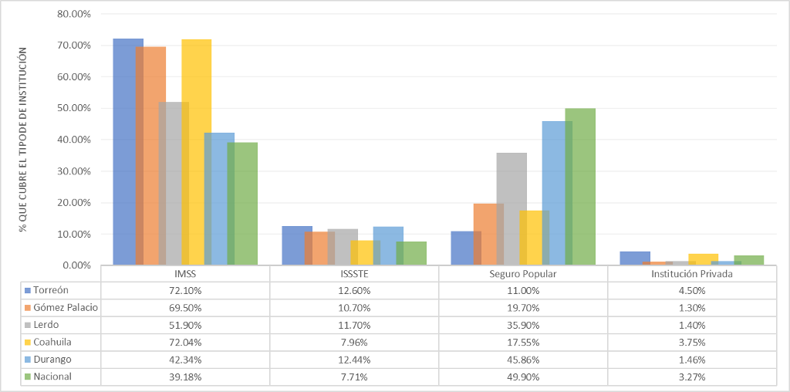

La mayor parte de la cobertura de salud en Torreón está a cargo del Instituto Mexicano del Seguro Social. El número de afiliados en la institución para el mes de agosto del 2017, representa el 30.61% de la población estimada del municipio.
Se consideran asegurados a las personas que están afiliadas en IMSS como titulares (ya sea en el régimen obligatorio o voluntario), sin considerar pensionados, beneficiarios de asegurados y pensionados. Este dato agrupa, a los trabajadores asegurados (que tienen un empleo) y asegurados no trabajadores (que no tienen empleo).
Por otro lado, el número de trabajadores asegurados por el IMSS, tuvo un incremento de 8.74% respecto al 31 de agosto de 2015. Esto significa que 192,619 trabajadores en Torreón, cuentan con todas las áreas de seguridad social cubiertas: riesgos de trabajo, enfermedades y maternidad, invalidez y vida, retiro, cesantía en edad avanzada y vejez, y guarderías y prestaciones sociales.
En cuanto a los asegurados no trabajadores, es decir, aquellos que no tienen un empleo y gozan de seguro facultativo (estudiantes), seguro de salud para la familia y que continúan voluntariamente al régimen obligatorio; el incremento de asegurados fue de 6.97%, cifra que asciende a 24,360.
Cobertura por Institución
La cobertura de salud en Torreón por Institución se encuentra distribuida de la siguiente manera: IMSS 72.1%, ISSSTE 12.6%, Seguro Popular 11.0%, Instituciones Privadas 4.5%, otra institución 2%, y, SEMAR Y SEDENA 0.3%. En la gráfica, se muestra la proporción de asegurados para Torreón, Gómez Palacio, Lerdo, Coahuila, Durango y Nacional; para los cuatro tipos de institución con más peso

Fuente: Elaboración propia con datos obtenidos de la Encuesta intercensal 2015 y Censos de Población y Vivienda 2005-2010.
El IMSS es la institución con mayor porcentaje en cobertura de salud respecto a los afiliados en cuatro de seis entidades y municipios: Torreón, Gómez Palacio, Lerdo y Coahuila. La cobertura más alta por porcentaje lo tiene Torreón con 72.10% de su población afiliada a servicios de salud. En contraste, la cobertura de salud por el Seguro Popular tiene más peso en Durango y en la República Mexicana, con 45.86% y 49.90% sobre su población afiliada a servicios de salud.
Existen otras características dentro de la Seguridad Social, que reflejan la situación laboral de la región: el sector económico y el tamaño del registro patronal.
Sector económico se refiere a la clasificación de la actividad económica de los patrones afiliados al IMSS. Por ejemplo, en Torreón, tenemos que los patrones y sus afiliados en dicha Institución, se dedican a laborar en primer lugar en Industrias de Transformación; como segunda actividad, está Comercio y en tercer plano Servicios para Empresas, Personas y el Hogar con porcentajes de 29.66%, 27.46% 7 17.38% respectivamente. Mismos sectores, que son compartidos por Gómez, y los estados, Coahuila, Durango e incluso la República Mexicana. Respetando el orden de importancia como en Torreón; excepto para Durango, donde el Comercio es opción uno, seguido de Industrias de Transformación y posterior; servicios, empresas, personas y el hogar. Lerdo es un caso especial, pues la Industria de la Construcción entra en lugar de la Industria de servicios ya mencionada; conservando, al igual que Torreón, el orden respecto a su peso porcentual.
Por otro lado, está la variable rango de tamaño de registro patronal. Lo que esta información muestra, es el tamaño del patrón de acuerdo al número de asegurados vigentes en el IMSS y se clasifican por rangos. Este indicador no contempla a los asegurados no trabajadores, aquellos que no cuentan con empleo. En la tabla se muestran los resultados de esta variable, ponderada en base al número de asegurados no trabajadores de cada entidad y municipio para el 31 de agosto de este año.
Se observa que los patrones y sus afiliados se concentran en los rangos de entre 6 y 50 asegurados, y entre 51 y 250. Por ejemplo, más del 50% de los patrones afiliados en el IMSS por cada municipio y entidades que aquí se comparan; representa a unidades económicas de hasta 250 asegurados con 6 como mínimo; incluso, el dato nacional se describe de la misma manera.
Porcentaje de patrones por rango de asegurados
| Rangos | Torreón | Gómez Palacio | Lerdo | Coahuila | Durango | Nacional |
|---|---|---|---|---|---|---|
| 1 Asegurado | 4.36% | 3.38% | 6.25% | 4.37% | 5.25% | 5.03% |
| Entre 2 y 5 asegurados | 11.80% | 10.26% | 19.55% | 12.24% | 14.46% | 14.04% |
| Entre 6 y 50 asegurados | 28.78% | 29.29% | 37.91% | 29.88% | 33.39% | 31.88% |
| Entre 51 y 250 asegurados | 27.22% | 28.02% | 28.19% | 25.22% | 25.67% | 24.53% |
| Entre 251 y 500 asegurados | 11.75% | 12.24% | 4.88% | 9.40% | 8.09% | 9.48% |
| Entre 501 y 1000 asegurados | 7.85% | 12.58% | 0.00% | 8.48% | 8.44% | 7.25% |
| Más de 1,000 de asegurados | 8.24% | 4.23% | 3.22% | 10.42% | 4.70% | 7.79% |
Fuente: Elaboración propia con datos obtenidos de datos abiertos IMSS.
Recuadro: Derecho a la Salud
La seguridad social en México, es un sistema para todos los mexicanos con prestaciones iguales; de derecho público y supervisado por el Estado; cuya finalidad, de acuerdo con el artículo 2 de la Ley del Seguro Social, es “garantizar el derecho humano a la salud, la asistencia médica, la protección de los medios de subsistencia y los servicios sociales necesarios para el bienestar individual y colectivo, así como el otorgamiento de una pensión… garantizada por el Estado”.
En función de la administración de los recursos para otorgar los beneficios mencionados, la seguridad social puede dividirse en Pública y Privada; y en un régimen voluntario o un régimen obligatorio en base a los artículos 12 y 13 de la Ley del Seguro Social, y en la Ley del ISSSTE los artículos 17 y 200.